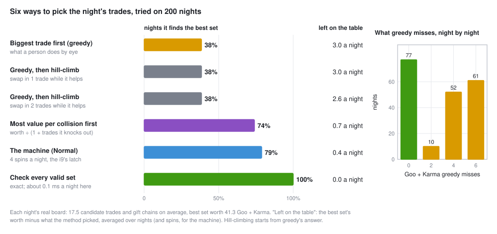
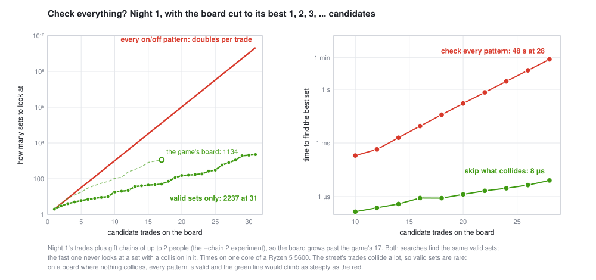
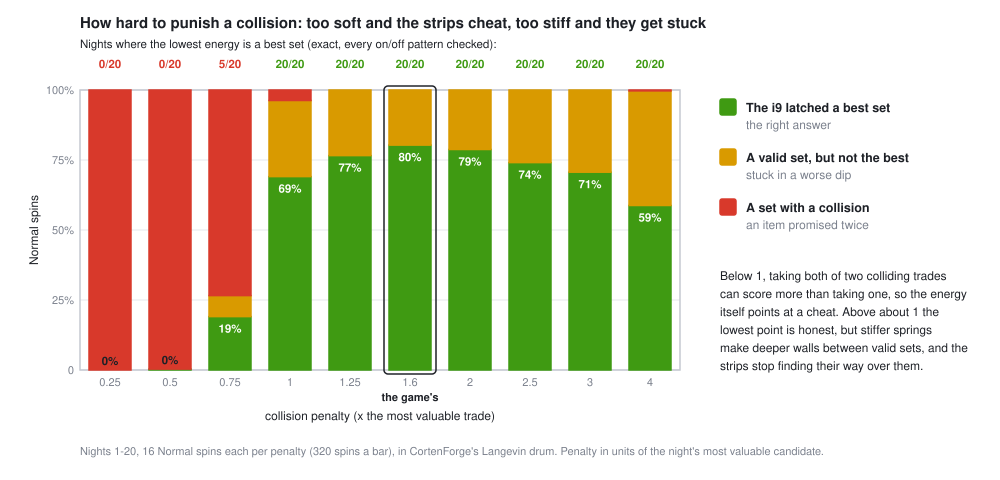

Greedy is not a strategy
Every night the street offers about 17 possible trades, and many of them want the same item. Pick the set worth the most. Grabbing the biggest trade first sounds sensible, and on 200 real nights it missed the best set on 6 nights in 10. Here's why, what does better, and the price of checking everything.
The puzzle
Each candidate trade is a loop of 2 to 4 people where everyone gains (or a gift chain, scored in Karma). Two trades collide when they need the same item: the hub motor can't go to two people. So the job is to choose a set of trades with no collisions that's worth as much as possible.
Draw every trade as a dot and every collision as a line, and the job is to pick dots, no two joined by a line, with the biggest total. Mathematicians call it the maximum-weight independent set problem. Here's night 1:

The trap is that a trade's worth depends on what else you take. The biggest dot is a good pick only if the dots it rules out are worth less. To know that, you have to weigh combinations, not items.
Six ways to pick, measured
We took the real boards from nights 1 to 200 and tried six methods on each, scoring every pick against the exact best.

Greedy: 38%
Sort the trades by worth, take each one that doesn't collide with what you already have. It's right on 77 nights of 200. When it's wrong it's usually wrong by a lot: on 61 nights it left 6 Goo or Karma behind, out of a best set worth about 41.
Fixing greedy by hill-climbing: still 38%
The obvious repair: start from greedy's answer and look for a better one nearby. Swap in one trade you don't have (dropping whatever it collides with), keep the swap if it gains, and repeat until nothing helps. On all 200 nights this found nothing. Greedy's answer was already a hilltop: no single swap improves it. Allowing two-trade swaps helped a little on average (2.6 left behind instead of 3.0) but found the best set on no extra nights.
This is a local optimum: a place where every small step goes down, though a higher peak exists somewhere else. To get from greedy's 37 to the best 43 on night 1 you have to give up the biggest trade first and lose value before you gain it. A method that only ever steps uphill can't do that.
A smarter rule: 74%
Rank each trade by its worth divided by one plus how many trades it would knock out, take the best, drop it and its neighbors, re-rank, repeat. A trade that blocks a lot has to be worth a lot. Same speed as greedy, right twice as often. It's still a rule of thumb, though, and you can build boards that fool it (exercise 2).
The machine: 79%
The game's washer does something no hill-climber can: it goes downhill on purpose. Hot strips hop between answers freely, uphill and down, and as the drum cools they settle into a deep dip. That's simulated annealing, and it lands on the best set in 79% of spins and leaves 0.4 behind on average. It's not perfect either. That's why the i9 keeps the best set it sees during the spin and why the game has several wash programs (Lesson 2 measures them).
Checking every valid set: 100%
List every collision-free set and keep the best. On this street that takes about a tenth of a millisecond a night. Which raises a fair question.
Why not always check everything?
With n candidate trades, each one on or off, there are 2n patterns. That doubles with every trade added: about a million at 20, a billion at 30, a trillion at 40. To see this on real boards we grew night 1's board past the game's 17 (by allowing longer gift chains) and timed two ways of searching it.

Checking every pattern doubles in time with every trade: under a fifth of a second at 20, about 50 seconds at 28. Keep doubling and 40 trades would take about 2 days and 60 trades thousands of years (that's arithmetic, not a measurement). But the smarter search, which skips any trade that collides with one already chosen, takes 8 microseconds at 28. It only visits valid sets, and on this street there are few of them, because the trades collide so much: 1,101 valid sets out of 268 million patterns at 28. (The game's own board has more, 1,134 at 17, and the search still takes 8 microseconds.)
That's the honest lesson about hard problems. Maximum-weight independent set is NP-hard: nobody knows a method that's fast on every board, and most experts believe none exists. But "hard in the worst case" is not "hard on your problem". Real problems have structure, and good exact solvers exploit it: they cut off whole branches that can't win. Remove the collisions and the structure goes away. With no collisions at all every pattern is valid, and the smart search is as slow as checking everything.
On a 17-trade street a laptop's exact search is faster than the drum: one spin is about 0.4 seconds of physics. The game keeps the board at 20 or fewer so it can always check the machine's answer exactly. The drum is there because annealing is how you attack the boards you can't check, and because watching steel strips find the answer is the fun part. The Machine has the whole story.
Rules as penalties
The drum can't forbid a collision. Strips are just bent steel. Instead the machine charges for one: each colliding pair is joined by a spring that pushes them apart, so taking both costs energy. This is how every annealer, quantum or classical, handles rules: the problem is written as one energy (a QUBO, in the jargon), reward for each trade minus a penalty for each broken rule.
How big should the penalty be? We tried ten sizes on nights 1 to 20, 16 spins each:

- Too soft, and the rules are for sale. Below about 1 (in units of the most valuable trade), taking two colliding trades can score more than taking one, so the lowest energy is a cheat: an item promised twice. At 0.5 the energy points at a cheat on all 20 nights, and 99.7% of spins latch one.
- Firm enough, and the answer is honest. From 1 up, the lowest energy is the best set on every night. Exercise 4 shows why the line falls there.
- Too stiff, and the search gets stuck. Bigger penalties don't change the answer but they make the walls between valid sets taller, and the strips stop climbing over them. Best-set spins fall from 80% at 1.6 to 59% at 4.
The game uses 1.6, near the top of the curve. There's no penalty that's right for every problem. You tune it, and tuning it is part of the job.
In the game
- The board is the puzzle. TRADES lists every candidate. When a spin finishes, compare the i9's call with what you'd have picked by eye.
- The board cam shows annealing. Early in a spin strips flip constantly, even into worse sets. That's the "go downhill on purpose" that greedy and hill-climbing can't do.
- A want is a constraint you add. Ask the machine to deliver one item and it gets a bonus on the trades that do. The game prices that want against the best set without it, the cost of the constraint.
On a trading desk
- Building a portfolio is not ranking stocks. Taking the ten stocks with the best expected return is greedy. Some of them are the same bet twice. Others crowd a limit (sector, country, how much of one company you may own). Harry Markowitz's point in 1952 was that a holding's worth depends on everything else you hold: weigh combinations, not items.
- Whole numbers make it hard. Lot sizes, "at most 30 names", minimum position sizes and on/off choices turn a smooth problem into a mixed-integer one, the same kind as our board. Desks hand these to commercial solvers like Gurobi and CPLEX, which use branch and bound: the "skip what can't win" search from section 03, made much cleverer.
- Matching is an optimization. An exchange's opening and closing auctions pick the one price that matches the most volume. Crossing networks match buyers with sellers inside a batch. Kidney exchanges pick the set of swap loops that helps the most patients, which is our board exactly (Lesson 3).
- Penalties everywhere. Portfolio optimizers trade expected return against penalties for risk, turnover and trading costs (Lesson 1). Set the risk penalty too low and the optimizer takes absurd bets; too high and it barely moves. Same curve, different units.
- Annealers on Wall Street. Quantum annealers and "digital annealers" take problems in exactly this QUBO form, and choosing a portfolio is one of their standard demos. Whether they beat a good classical solver on real problems is still argued over. Simulated annealing itself (Kirkpatrick, Gelatt and Vecchi, 1983) is a plain-computer method and is used everywhere.
Greedy is exactly right when choices don't interact: if nothing collides, take everything worth taking. It's also right for some special structures (mathematicians call them matroids). And a fast rule of thumb you can run now can beat a perfect method you can't: an order router deciding in microseconds has no time for branch and bound. Use greedy as a baseline you have to beat, not as the answer.
Run it yourself
# six methods on 200 nights (~4 min: the machine spins 800 times)
cargo run --release --example machine_figs -- ladder
# patterns vs valid sets, both searches timed (~1 min)
cargo run --release --example machine_figs -- blowup
# the penalty sweep (~5 min: 3,200 spins)
cargo run --release --example machine_figs -- penalties
# one night's board: candidates, the machine's call, the exact best
cargo run --release --example trade_cli -- run --night 1The methods are greedy, hill_climb and greedy_per_collision in examples/machine_figs.rs. The exact search is qubo::for_each_valid_set and the penalty is qubo::build, both in src/trade/qubo.rs. The drum is CortenForge's Langevin thermostat.
Exercises
Three trades: A is worth 5, B is worth 6, C is worth 5. B collides with A and with C; A and C don't collide. What does greedy pick, and what's the best set?
Answer
Greedy takes B (6), which knocks out both others: 6. The best is A + C = 10. The biggest item was the worst pick.
Find a board that fools the "most value per collision" rule.
Answer
One way: A is worth 10 and collides with B and C, each worth 6; B and C don't collide. A scores 10 ÷ 3 ≈ 3.3, B and C score 6 ÷ 2 = 3, so the rule takes A for 10. The best is B + C = 12. Any rule that looks at one trade at a time can be fooled by some board.
A computer checks a billion on/off patterns a second. How long does checking every pattern take with 40 candidate trades? With 60?
Answer
240 ≈ 1.1 trillion patterns, about 18 minutes. 260 ≈ 1.15 × 1018, about 36 years. Twenty more trades multiply the time by a million.
Two colliding trades are worth 4 and 7. The energy rewards each trade you take by its worth and charges a penalty P if you take both. How big must P be so that taking both never beats taking the better one alone?
Answer
Both: 4 + 7 − P. The better one alone: 7. Taking both stops paying when 11 − P < 7, so P > 4, the smaller worth. A penalty above the most valuable trade beats every pair, which is why the figure turns honest at about 1.
You need to buy exactly 100 lots. Three sellers offer 60, 50 and 40 lots at the same price, all or nothing. What does "biggest first" fill, and what's best?
Answer
Biggest first takes 60, then neither 50 nor 40 fits under 100: 60 lots. The best is 60 + 40 = 100. This is the knapsack problem, another member of the hard family, and it's why all-or-nothing orders make matching hard.